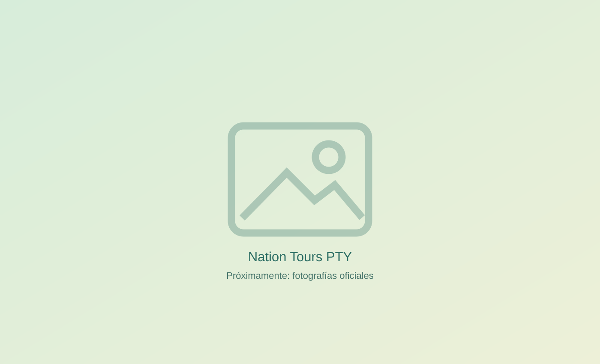

SERVICIOS DE NATION TOURS PTY
Historia del Canal y patrimonio en Colón
- Traslado de ida y vuelta al punto de embarque
- Paseo en bote por el área del Lago Gatún
- Posible observación de monos y otras especies de fauna silvestre
- Hidratación y acompañamiento durante la experiencia
Un recorrido centrado en las esclusas de Agua Clara y el Fuerte de San Lorenzo, dos lugares que conectan la historia del país con el Canal de Panamá.
La duración, la tarifa, los horarios y las entradas específicas se confirman directamente antes de reservar.
Tu experiencia incluye
✦Precio pendiente de confirmar
✦Esclusas de Agua Clara
✦Fuerte de San Lorenzo
✦Tour histórico guiado
✦Duración, recogida y entradas por confirmar
Consultar disponibilidadFOTOGRAFÍAS DEL TOUR
Explora la experiencia
Fotografías compartidas por Nation Tours PTY.
PAGA A TU MANERA
Métodos de pago
Escoge la opción que mejor se adapte a ti. La disponibilidad se confirma al coordinar tu reserva.
TU PRÓXIMA HISTORIA EMPIEZA AQUÍ
Hablemos por WhatsApp ↗¿Te gustaría vivir esta experiencia?
Escríbenos y organicemos juntos todos los detalles.